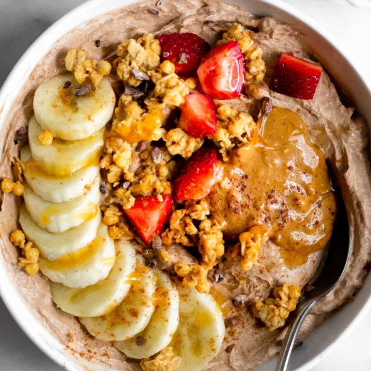

Home
🍓 Recipe: High-Protein Yogurt Bowl (No Cooking, PCOS-Friendly)

Description
This quick and easy yogurt bowl is perfect for a healthy meal or snack.
It is high in protein, low in added sugar, and requires no cooking. It helps keep energy stable and supports better eating habits.
Ingredients
For this recipe, you'll need:
- 1 cup plain Greek yogurt (unsweetened)
- 1 small handful of berries (strawberries, blueberries, or raspberries)
- 1 tablespoon chia seeds or flaxseeds
- 1 tablespoon nut butter (almond or peanut butter)
- A small handful of nuts (optional)
- A drizzle of honey or a few drops of stevia (optional)
Steps
- Add the Greek yogurt to a bowl.
- Wash and cut the berries if needed, then add them on top.
- Sprinkle chia seeds or flaxseeds over the bowl.
- Add a spoon of nut butter.
- Add some nuts if you want extra crunch.
- Optionally, add a small drizzle of honey or sweetener.
- Mix everything together or eat it as is.